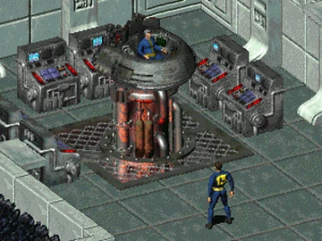
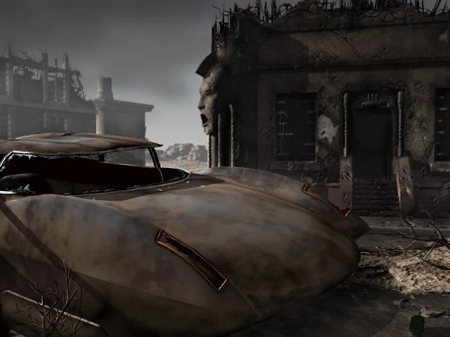

What if the Vault Dweller had failed? If he ultimately failed to destroy the source of the supermutants? The story behind Fallout 1 pettily tells of this intriguing future. The Army of Unity would definitely advance east and south, recruiting new soldiers into its army in the process. What would be the fate of Shady Sands, Hub, Junktown, Necropolis and Los Angeles? Finally, what about the residents of Vault 13? Well, this is where the story begins!
The mod is set several hundred days after the events of Fallout 1. Actually the Vault Dweller found the water chip, but failed second task given by the Overseer. His fate remains unknown. That would be no secret that the supermutants will soon invade Vault 13 and turn its inhabitants into an army of brainless green cucumbers, unless someone prevents them. Supermutants grow like mushrooms and acquire better equipment. That's no longer a child's play.

They have destroyed several major population centers. Beyond the mountains, nothing more than fullfiled with green goo vats or death awaits. The Junktown seems gone, and so is the Hub. Only in the ruins of Los Angeles is there visible resistance: Regulators, Blades, Children of the Apocalypse, Gun Runners.
And the northeast? It has also somehow strangely gone quiet, although word is that some people are still there! Citadel of the Brotherhood of Steel? They evaporated... Ghouls of Necropolis? Stop kidding. Could it be that the Master's wet dream was about to come true.
The mod is created and developed continuously by one person. Previously, a second person also helped with the map work. A great deal of support was also received from Lexx and cubik2k from the NMA community. Special thanks for them!
Currently project development is paused. But no worries! Soon it gonna be resumed again!